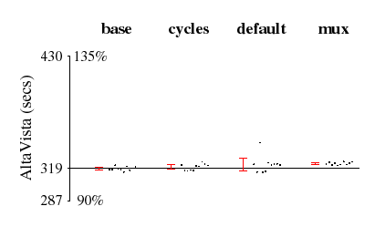
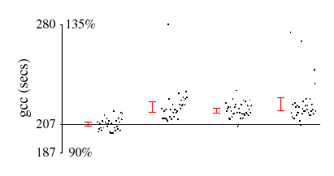
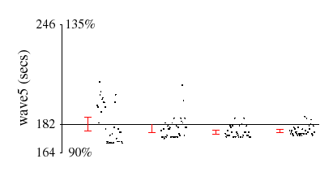

5. Profiling Performance
Performance is critical to the success of a profiling system intended to run continuously on production systems. The system must collect many thousands of samples per second yet incur sufficiently low overhead that its benefits outweigh its costs. In this section we summarize the results of experiments designed to measure the performance of our system and to explore tradeoffs in its design.
We evaluated our profiling system's performance under three different configurations: cycles, in which the system monitors only cycles, default, in which the system monitors both cycles and instruction-cache misses, and mux, in which the system monitors cycles with one performance counter and uses multiplexing to monitor instruction-cache misses, data-cache misses, and branch mispredictions with another counter. Table 2 shows the workloads used, their average running times (from a minimum of 10 runs, shown with 95%-confidence intervals) in the base configuration without our system, and the machines on which they ran.
| Workload | Mean base runtime (secs) | Platform | Description |
|---|---|---|---|
| Uniprocessor Workloads | |||
| SPECint95 | 13226 ± 258 | 333 MHz ALPHASTATION 500 | The SPEC benchmark suite compiled using both the BASE and PEAK compilation flags and run with the runspec driver[SPEC95]. |
| SPECfp95 | 17238 ± 106 | 333 MHz ALPHASTATION 500 | |
| x11perf | N/A | 333 MHz ALPHASTATION 500 | Several tests from the x11perf X server performance testing program. The tests chosen are representative of CPU-bound tests[McCKAK]. |
| McCalpin | N/A | 333 MHz ALPHASTATION 500 | The McCalpin STREAMS benchmark, consisting of four loops that measure memory-system bandwidth [McC95]. |
| Multiprocessor Workloads | |||
| AltaVista | 319 ± 2 | 300 MHz 4-CPU ALPHASERVER 4100 | A trace of 28622 queries made to the 3.5 GB AltaVista news index. The system was driven so as to maintain 8 outstanding queries. |
| DSS | 2786 ± 35 | 300 MHz 8-CPU ALPHASERVER 8400 | A decision-support system (DSS) query based upon the TPC-D specification[TPPC]. |
| parallel SPECfp | 2777 ± 168 | 300 MHz 4-CPU ALPHASERVER 4100 | The SPECfp95 programs, parallelized by the Stanford SUIF compiler[Hal96]. |
| timesharing | 7 days | 300 MHz 4-CPU ALPHASERVER 4100 | A timeshared server used for office and technical applications, running the default configuration of our system. We used this workload to gather statistics for a long-running profile session. |
To measure the overhead, we ran each workload a minimum of 10 times in each configuration, and ran many workloads as many as 50 times. Table 3 shows the percentage overhead (with 95%-confidence intervals) imposed by the three different configurations of our system compared to the base configuration. (The timesharing workload is not included in the table; since it was measured on a live system, we cannot run it in each configuration to determine overall slowdown.) McCalpin and x11perf report their results as rates (MB/sec for McCalpin, and operations/sec for x11perf); for these, the table shows the degradation of the rates. For the other workloads, the table shows the increase in running time. The numbers in Table 3 show that the overall overhead imposed by our system is quite low, usually 1 to 3%. The variation in performance from run to run of each workload is typically much greater than our system's overhead.
| Workload | cycles (%) | default (%) | mux (%) |
|---|---|---|---|
| Uniprocessor Workloads | |||
| SPECint95 | 2.0 ± 0.8 | 2.8 ± 0.9 | 3.0 ± 0.7 |
| SPECfp95 | 0.6 ± 1.0 | 0.5 ± 1.1 | 1.1 ± 1.1 |
| x11perf | |
||
| noop | 1.6 ± 0.5 | 1.9 ± 0.5 | 2.2 ± 0.5 |
| circle10 | 2.8 ± 0.6 | 2.4 ± 0.4 | 2.4 ± 0.4 |
| ellipse10 | 1.5 ± 0.2 | 1.8 ± 0.2 | 2.3 ± 0.4 |
| 64poly10 | 1.1 ± 0.4 | 2.0 ± 0.5 | 2.4 ± 0.6 |
| ucreate | 2.7 ± 0.7 | 4.2 ± 0.7 | 5.0 ± 0.7 |
| McCalpin | |
||
| assign | 0.9 ± 0.1 | 0.9 ± 0.1 | 1.1 ± 0.1 |
| saxpy | 1.0 ± 0.1 | 1.1 ± 0.1 | 1.3 ± 0.1 |
| scale | 1.1 ± 0.1 | 1.1 ± 0.1 | 1.2 ± 0.1 |
| sum | 1.1 ± 0.1 | 1.1 ± 0.1 | 1.2 ± 0.1 |
| Multiprocessor Workloads | |||
| AltaVista | 0.5 ± 0.8 | 1.3 ± 1.8 | 1.6 ± 0.5 |
| DSS | 1.2 ± 1.1 | 1.8 ± 2.6 | 0.6 ± 0.3 |
| parallel SPECfp | 6.0 ± 3.5 | 3.1 ± 1.8 | 7.5 ± 4.6 |
Figure 6 shows the data in more detail for three programs: AltaVista; the gcc portion of the SPECint95 workload (peak version); and the wave5 portion of the SPECfp95 workload (peak version). Each graph gives a scatter plot of the running times in seconds for all four configurations. The x-axis is centered at the mean base value; the range of the y-axis is from 90% to 135% of the mean value. 95%-confidence intervals are also shown.
|  |
|  |
|  |
AltaVista is representative of the majority of the workloads that we studied: the profiling overhead is small and there is little variance across the different runs. In contrast, our system incurs relatively high overhead on gcc (about 4% to 10%). This benchmark compiles 56 pre-processed source files into assembly files; each file requires a separate invocation of the program and thus has a distinct PID. Since samples with distinct PID's do not match in the hash table, the eviction rate is high, resulting in higher overhead (see section 5.2). Finally, the wave5 data shows an apparent speedup from running DCPI in our experiments. In this and similar cases, the running time variance exceeded our profiling overhead.
The overheads we measured are likely to be slightly higher than would be experienced in practice, since as discussed in the next section, all measurements were done using an instrumented version of the system that logged additional statistics, imposing overhead that would not normally be incurred.
There are two main components to our system's overhead. First is the time to service performance-counter interrupts. Second is the time to read samples from the device driver into the daemon and merge the samples into the on-disk profiles for the appropriate images. To investigate the cost of these two components, we performed all the experiments with our system instrumented to collect several statistics: (1) the number of cycles spent in our interrupt handler, collected separately for the cases when samples hit or miss in the hash table; (2) the eviction rate from the hash table; and (3) the total number of samples observed. For real workloads, we are able to directly measure only the time spent in our interrupt handler, which does not include the time to deliver the interrupt nor the time to return from the interrupt handler. Experimentation with a tight spin loop revealed the best-case interrupt setup and teardown time to be around 214 cycles (not including our interrupt handler itself). Under real workloads, this value is likely to increase due to additional instruction-cache misses.
To evaluate the daemon's per-sample cost of processing, all experiments were configured to gather per-process samples for the daemon itself; this showed how many cycles were spent both in the daemon and in the kernel on behalf of the daemon. Dividing this by the total number of samples processed by the driver gives the per-sample processing time in the daemon. (The per-sample metric is used to allow comparison with the per-sample time in the interrupt handler, and is different from the time spent processing each entry from the overflow buffer (since multiple samples are "processed" for entries with counts higher than one).)
These statistics are summarized for each workload in Table 4 for each of the three profiling configurations. We also separately measured the statistics for the gcc program in the SPECint95 workload to show the effects of a high eviction rate. The table shows that workloads with low eviction rates, such as SPECfp95 and AltaVista, not only spend less time processing each interrupt (because a hit in the hash table is faster), but also spend less time processing each sample in the daemon because many samples are aggregated into a single entry before being evicted from the hash table. For workloads with a high eviction rate, the average interrupt cost is higher; in addition, the higher eviction rate leads to more overflow entries and a higher per-sample cost in the daemon.
| Workload | cycles | default | mux | |||||||||
|---|---|---|---|---|---|---|---|---|---|---|---|---|
| miss rate | per sample cost (cycles) | miss rate | per sample cost (cycles) | miss rate | per sample cost (cycles) | |||||||
| intr cost avg (hit/miss) | daemon cost | intr cost avg (hit/miss) | daemon cost | intr cost avg (hit/miss) | daemon cost | |||||||
| SPECint95 | 6.7% | 435 (416/700) | 175 | 9.5% | 451 (430/654) | 245 | 9.5% | 582 (554/842) | 272 | |||
| gcc | 38.1% | 551 (450/716) | 781 | 44.5% | 550 (455/669) | 927 | 44.2% | 667 (558/804) | 982 | |||
| SPECfp95 | 0.6% | 486 (483/924) | 59 | 1.4% | 437 (433/752) | 95 | 1.5% | 544 (539/883) | 107 | |||
| x11perf | 2.1% | 464 (454/915) | 178 | 5.6% | 454 (436/763) | 266 | 5.5% | 567 (550/868) | 289 | |||
| McCalpin | 0.7% | 388 (384/1033) | 51 | 1.4% | 391 (384/916) | 70 | 1.1% | 513 (506/1143) | 72 | |||
| AltaVista | 0.5% | 343 (340/748) | 21 | 1.7% | 349 (344/661) | 56 | 1.6% | 387 (382/733) | 47 | |||
| DSS | 0.5% | 230 (227/755) | 41 | 0.9% | 220 (216/660) | 49 | 0.9% | 278 (273/815) | 60 | |||
| parallel SPECfp | 0.3% | 356 (354/847) | 29 | 0.7% | 355 (352/713) | 47 | 0.9% | 444 (440/854) | 58 | |||
| timesharing | not measured | 0.7% | 202 (199/628) | 66 | not measured | |||||||
Memory and disk resources are also important. Memory is consumed by both the device driver and the daemon, while disk space is used to store nonvolatile profile data.
As described in Section 4, the device driver maintains a hash table and a pair of overflow buffers for each processor in non-pageable kernel memory. In all of our experiments, each overflow buffer held 8K samples and each hash table held 16K samples, for a total of 512KB of kernel memory per processor.
The daemon consumes ordinary pageable memory. It allocates a buffer large enough to flush one overflow buffer or hash table per processor, as well as data structures for every active process and image. Memory usage grows with the number of active processes, and also depends upon workload locality. Per-process data structures are reaped infrequently (by default, every 5 minutes), and samples for each image are buffered until saved to disk (by default, every 10 minutes); as a result, the daemon's worst-case memory consumption occurs when the profiled workload consists of many short-lived processes or processes with poor locality.
Table 5 presents the average and peak resident memory (both text and data) used by the daemon for each workload. For most workloads, memory usage is modest. The week-long timesharing workload, running on a four-processor compute server with hundreds of active processes, required the most memory. However, since this multiprocessor has 4GB of physical memory, the overall fraction of memory devoted to our profiling system is less than 0.5%.
| Workload | cycles | default | mux | |||||||||
|---|---|---|---|---|---|---|---|---|---|---|---|---|
| Uptime | Space (KBytes) | Uptime | Space (KBytes) | Uptime | Space (KBytes) | |||||||
| Memory avg (peak) | Disk usage | Memory avg (peak) | Disk usage | Memory avg (peak) | Disk usage | |||||||
| SPECint95 | 14:57:50 | 6600 (8666) | 2639 | 15:00:36 | 8284 (13500) | 4817 | 15:08:45 | 8804 (11250) | 6280 | |||
| gcc | 5:49:37 | 8862 (11250) | 1753 | 5:42:10 | 9284 (9945) | 3151 | 5:47:44 | 11543 (12010) | 4207 | |||
| SPECfp95 | 19:15:20 | 2364 (3250) | 1396 | 19:14:17 | 2687 (3750) | 2581 | 19:22:37 | 2958 (3800) | 3182 | |||
| x11perf | 0:21:25 | 1586 (1750) | 216 | 0:20:58 | 1786 (1917) | 356 | 0:21:31 | 1959 (2141) | 434 | |||
| McCalpin | 0:09:10 | 1568 (2000) | 108 | 0:09:07 | 1716 (2179) | 155 | 0:09:09 | 1812 (2311) | 157 | |||
| AltaVista | 0:26:49 | 2579 (3000) | 265 | 0:27:04 | 2912 (3286) | 470 | 0:27:09 | 3156 (3571) | 571 | |||
| DSS | 3:55:14 | 4389 (5500) | 634 | 3:56:23 | 5126 (5288) | 1114 | 3:53:41 | 5063 (5242) | 1389 | |||
| parallel SPECfp | 8:10:49 | 2902 (3250) | 1157 | 7:57:02 | 3384 (3636) | 2028 | 8:17:34 | 3662 (3950) | 2616 | |||
| timesharing | not measured | 187:43:46 | 10887 (14200) | 12601 | not measured | |||||||
On workstations with smaller configurations (64MB to 128MB), the memory overhead ranges from 5 to 10%. Since the current daemon implementation has not been carefully tuned, we expect substantial memory savings from techniques such as reductions in the storage costs of hash tables and more aggressive reaping of inactive structures.
Finally, as shown in Table 5, the disk space consumed by profile databases is small. Most sets of profiles required only a few megabytes of storage. Even the week-long timesharing workload, which stored both CYCLES and IMISS profiles for over 480 distinct executable images, used just 13MB of disk space.
While the driver has been carefully engineered for performance, there is still room for improvement. In addition, the performance of the daemon can probably be improved substantially.
As shown in Section 5.2, the performance of our system is heavily dependent on the effectiveness of the hash table in aggregating samples. To explore alternative designs, we constructed a trace-driven simulator that models the driver's hash table structures. Using sample traces logged by a special version of the driver, we examined varying associativity, replacement policy, overall table size and hash function.
Our experiments indicate that (1) increasing associativity from 4-way to 6-way, by packing more entries per processor cache line (which would also increase the total number of entries in the hash table), and (2) using swap-to-front on hash-table hits and inserting new entries at the beginning of the line, rather than the round-robin policy we currently use, would reduce the overall system cost by 10-20%. We intend to incorporate both of these changes in a future version of our system.
Unlike the driver, the user-mode daemon has not been heavily optimized. A few key changes should reduce the time to process each raw driver sample significantly. One costly activity in the daemon involves associating a sample with its corresponding image; this currently requires three hash lookups. Sorting each buffer of raw samples by PID and PC could amortize these lookups over a large number of samples. Memory copy costs could also be reduced by mapping kernel sample buffers directly into the daemon's address space. We estimate that these and other changes could cut the overhead due to the daemon by about a factor of 2.
Beginning of paper
Abstract
1. Introduction
2. Related Work
3. Data Analysis Examples
4. Data Collection System
5. Profiling Performance
6. Data Analysis Overview
7. Future Directions
8. Conclusions
Acknowledgements
References